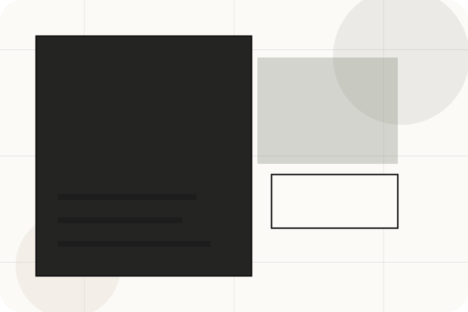
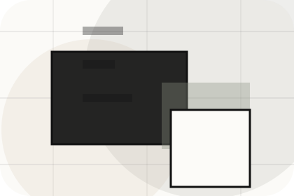
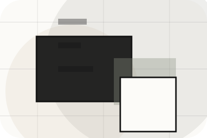
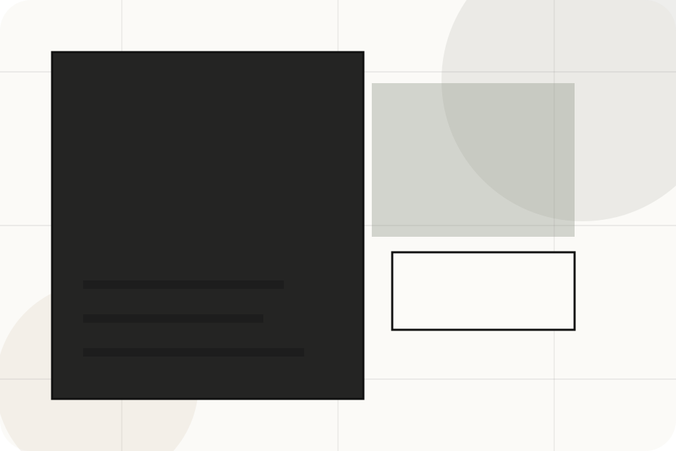
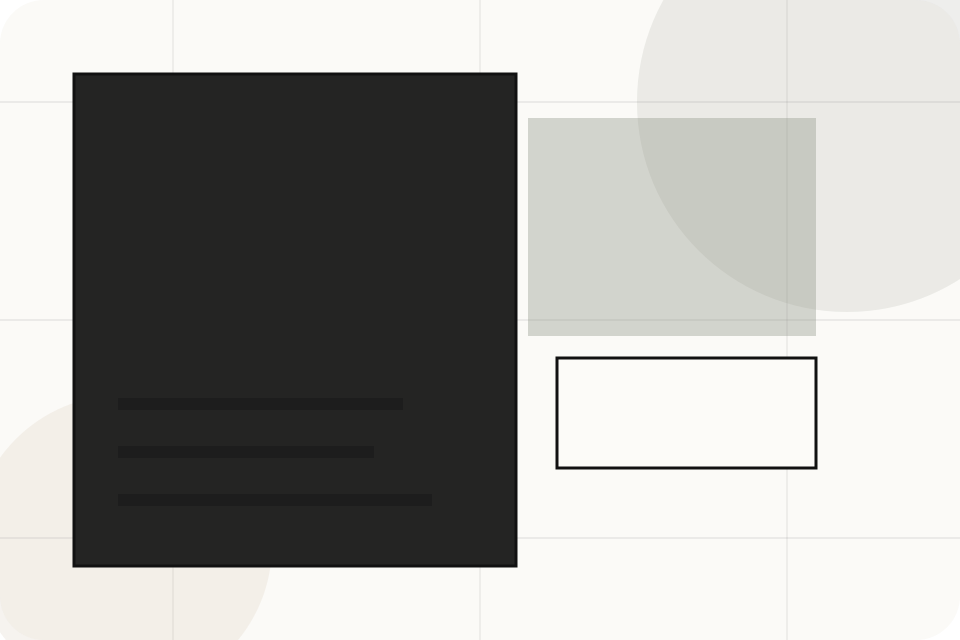
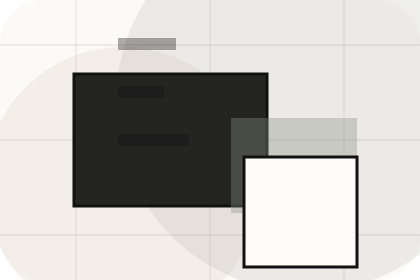
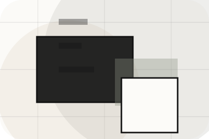
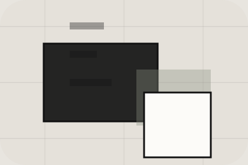

Context
Search gives the page a specific angle instead of repeating the navigation label.
Properties / 01
Properties opens as a clear real estate decision hub: what Urban offers, who it helps, why it matters, and which route to take first.
The first screen combines positioning, proof, primary action, and fast internal navigation, so people can act immediately or compare the rest of the properties route with context.
Architectural listing hero
Select the closest route and Urban keeps the next step, proof, and follow-up expectation aligned with market confidence and discovery.

Properties / 02
Search adds professional context to the properties route, using the minimal property journal structure to support market confidence and discovery before visitors choose a next step.
Urban uses thin-rule listing cards and focused copy to make the decision easier to scan, aligning the section with market confidence and discovery rather than filling space.
Explore PropertiesSearch gives the page a specific angle instead of repeating the navigation label.
The thin-rule listing cards show what to compare, what to avoid, and what matters most for real estate, property & land services visitors.
The final cue points to a useful internal route so the section keeps the journey moving.
Properties / 04
Filters adds professional context to the properties route, using the minimal property journal structure to support market confidence and discovery before visitors choose a next step.
Urban uses thin-rule listing cards and focused copy to make the decision easier to scan, aligning the section with market confidence and discovery rather than filling space.
Explore PropertiesFilters gives the page a specific angle instead of repeating the navigation label.
The thin-rule listing cards show what to compare, what to avoid, and what matters most for real estate, property & land services visitors.

The final cue points to a useful internal route so the section keeps the journey moving.
Properties / 05
Cards adds professional context to the properties route, using the minimal property journal structure to support market confidence and discovery before visitors choose a next step.
Urban uses thin-rule listing cards and focused copy to make the decision easier to scan, aligning the section with market confidence and discovery rather than filling space.
Explore PropertiesCards gives the page a specific angle instead of repeating the navigation label.
The thin-rule listing cards show what to compare, what to avoid, and what matters most for real estate, property & land services visitors.
The final cue points to a useful internal route so the section keeps the journey moving.
Properties / 06
Details adds professional context to the properties route, using the minimal property journal structure to support market confidence and discovery before visitors choose a next step.
Urban uses thin-rule listing cards and focused copy to make the decision easier to scan, aligning the section with market confidence and discovery rather than filling space.
Explore PropertiesDetails gives the page a specific angle instead of repeating the navigation label.
The thin-rule listing cards show what to compare, what to avoid, and what matters most for real estate, property & land services visitors.
The final cue points to a useful internal route so the section keeps the journey moving.
Properties / 07
Gallery adds professional context to the properties route, using the minimal property journal structure to support market confidence and discovery before visitors choose a next step.
Urban uses thin-rule listing cards and focused copy to make the decision easier to scan, aligning the section with market confidence and discovery rather than filling space.
Explore Properties
Gallery gives the page a specific angle instead of repeating the navigation label.


Architectural listing hero
Select the closest route and Urban keeps the next step, proof, and follow-up expectation aligned with market confidence and discovery.
Properties / 08
Enquiry makes the contact path concrete: what to send, how the response works, and what Urban needs before visitors get a valuation.
The section reduces contact friction by naming the channel, expected detail, privacy path, and response expectation instead of dropping visitors into a generic form.
Get Valuation
What information helps Urban respond with a useful answer instead of a generic reply.
Properties / 09
Similar adds professional context to the properties route, using the minimal property journal structure to support market confidence and discovery before visitors choose a next step.
Urban uses thin-rule listing cards and focused copy to make the decision easier to scan, aligning the section with market confidence and discovery rather than filling space.
Explore PropertiesSimilar gives the page a specific angle instead of repeating the navigation label.
The thin-rule listing cards show what to compare, what to avoid, and what matters most for real estate, property & land services visitors.

The final cue points to a useful internal route so the section keeps the journey moving.
Properties / 10
Urban closes the properties route with a clear action, a quick reminder of the value, and a low-friction way to get a valuation.
Visitors who are ready can use the primary action. Visitors who are still comparing can scan the section links, proof, and support routes before they get a valuation.
Get ValuationThe final block keeps the choice simple: act now, compare one more proof route, or send enough detail for a focused response.
Get Valuationmarket confidence and discovery
A real-estate editorial site with architecture-led listings, sparse navigation, area guides, and valuation flow. Properties ends with a direct path to get a valuation, plus enough context for visitors who still need to compare.

Get Valuation